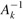

|
|
< Day Day Up > |
|
Symmetric positive-definite matrices have many interesting and desirable properties. For example, they are nonsingular, and LU decomposition can be performed on them without our having to worry about dividing by 0. In this section, we shall prove several other important properties of symmetric positive-definite matrices and show an interesting application to curve fitting by a least-squares approximation.
The first property we prove is perhaps the most basic.
Any positive-definite matrix is nonsingular.
Proof Suppose that a matrix A is singular. Then by Corollary 28.3, there exists a nonzero vector x such that Ax = 0. Hence, xT Ax = 0, and A cannot be positive-definite.
The proof that we can perform LU decomposition on a symmetric positive-definite matrix A without dividing by 0 is more involved. We begin by proving properties about certain submatrices of A. Define the kth leading submatrix of A to be the matrix Ak consisting of the intersection of the first k rows and first k columns of A.
If A is a symmetric positive-definite matrix, then every leading submatrix of A is symmetric and positive-definite.
Proof That each leading submatrix Ak is symmetric is obvious. To prove that Ak is positive-definite, we assume that it is not and derive a contradiction. If Ak is not positive-definite, then there exists a size-k vector xk ≠ 0 such that . Letting A be n × n, we define the size-n vector , where there are n - k 0's following xk. Then we have
which contradicts A being positive-definite.
We now turn to some essential properties of the Schur complement. Let A be a symmetric positive-definite matrix, and let Ak be a leading k × k submatrix of A. Partition A as
We generalize definition (28.23) to define the Schur complement of A with respect to Ak as
(By Lemma 28.10, Ak is symmetric and positive-definite; therefore, exists by Lemma 28.9, and S is well defined.) Note that our earlier definition (28.23) of the Schur complement is consistent with definition (28.29), by letting k = 1.
The next lemma shows that the Schur-complement matrices of symmetric positive-definite matrices are themselves symmetric and positive-definite. This result was used in Theorem 28.8, and its corollary is needed to prove the correctness of LU decomposition for symmetric positive-definite matrices.
If A is a symmetric positive-definite matrix and Ak is a leading k × k submatrix of A, then the Schur complement of A with respect to Ak is symmetric and positive-definite.
Proof Because A is symmetric, so is the submatrix C. By Exercise 28.1-8, the product is symmetric, and by Exercise 28.1-1, S is symmetric.
It remains to show that S is positive-definite. Consider the partition of A given in equation (28.28). For any nonzero vector x, we have xT Ax > 0 by the assumption that A is positive-definite. Let us break x into two subvectors y and z compatible with Ak and C, respectively. Because  exists, we have
by matrix magic. (Verify by multiplying through.) This last equation amounts to "completing the square" of the quadratic form. (See Exercise 28.5-2.)
Since xT Ax > 0 holds for any nonzero x, let us pick any nonzero z and then choose  , which causes the first term in equation (28.30) to vanish, leaving
, which causes the first term in equation (28.30) to vanish, leaving
as the value of the expression. For any z ≠ 0, we therefore have zTSz = xTAx > 0, and thus S is positive-definite.
LU decomposition of a symmetric positive-definite matrix never causes a division by 0.
Proof Let A be a symmetric positive-definite matrix. We shall prove something stronger than the statement of the corollary: every pivot is strictly positive. The first pivot is a11. Let e1 be the first unit vector, from which we obtain . Since the first step of LU decomposition produces the Schur complement of A with respect to A1 = (a11), Lemma 28.11 implies that all pivots are positive by induction.
Fitting curves to given sets of data points is an important application of symmetric positive-definite matrices. Suppose that we are given a set of m data points
(x1, y1), (x2, y2), . . . , (xm, ym),
where the yi are known to be subject to measurement errors. We would like to determine a function F(x) such that
for i = 1, 2, . . . , m, where the approximation errors ηi are small. The form of the function F depends on the problem at hand. Here, we assume that it has the form of a linearly weighted sum,
where the number of summands n and the specific basis functions fj are chosen based on knowledge of the problem at hand. A common choice is fj(x) = xj-1, which means that
F (x) = c1 + c2x + c3x2 +. . .+ cnxn-1
is a polynomial of degree n - 1 in x.
By choosing n = m, we can calculate each yi exactly in equation (28.31). Such a high-degree F "fits the noise" as well as the data, however, and generally gives poor results when used to predict y for previously unseen values of x. It is usually better to choose n significantly smaller than m and hope that by choosing the coefficients cj well, we can obtain a function F that finds the significant patterns in the data points without paying undue attention to the noise. Some theoretical principles exist for choosing n, but they are beyond the scope of this text. In any case, once n is chosen, we end up with an overdetermined set of equations whose solution we wish to approximate. We now show how this can be done.
Let
denote the matrix of values of the basis functions at the given points; that is, aij = fj(xi). Let c = (ck) denote the desired size-n vector of coefficients. Then,
is the size-m vector of "predicted values" for y. Thus,
η = Ac - y
is the size-m vector of approximation errors.
To minimize approximation errors, we choose to minimize the norm of the error vector η, which gives us a least-squares solution, since
Since
we can minimize ∥η∥ by differentiating ∥η∥2 with respect to each ck and then setting the result to 0:
The n equations (28.32) for k = 1, 2, . . . , n are equivalent to the single matrix equation
(Ac - y)T A = 0
or, equivalently (using Exercise 28.1-2), to
AT(Ac - y) = 0,
which implies
In statistics, this is called the normal equation. The matrix AT A is symmetric by Exercise 28.1-2, and if A has full column rank, then by Theorem 28.6, AT A is positive-definite as well. Hence, (AT A)-1 exists, and the solution to equation (28.33) is
where the matrix A+ = ((AT A)-1 AT) is called the pseudoinverse of the matrix A. The pseudoinverse is a natural generalization of the notion of a matrix inverse to the case in which A is nonsquare. (Compare equation (28.34) as the approximate solution to Ac = y with the solution A-1b as the exact solution to Ax = b.)
As an example of producing a least-squares fit, suppose that we have five data points
|
(x1, y1) |
= |
(-1, 2), |
|
(x2, y2) |
= |
(1, 1), |
|
(x3, y3) |
= |
(2, 1), |
|
(x4, y4) |
= |
(3, 0), |
|
(x5, y5) |
= |
(5, 3), |
shown as black dots in Figure 28.3. We wish to fit these points with a quadratic polynomial
F (x) = c1 + c2x + c3x2.
We start with the matrix of basis-function values
whose pseudoinverse is
Multiplying y by A+, we obtain the coefficient vector
which corresponds to the quadratic polynomial
F(x) = 1.200 - 0.757x + 0.214x2
as the closest-fitting quadratic to the given data, in a least-squares sense.
As a practical matter, we solve the normal equation (28.33) by multiplying y by AT and then finding an LU decomposition of AT A. If A has full rank, the matrix AT A is guaranteed to be nonsingular, because it is symmetric and positive-definite. (See Exercise 28.1-2 and Theorem 28.6.)
Prove that every diagonal element of a symmetric positive-definite matrix is positive.
Let be a 2 × 2 symmetric positive-definite matrix. Prove that its determinant ac - b2 is positive by "completing the square" in a manner similar to that used in the proof of Lemma 28.11.
Prove that the maximum element in a symmetric positive-definite matrix lies on the diagonal.
Prove that the determinant of each leading submatrix of a symmetric positive-definite matrix is positive.
Let Ak denote the kth leading submatrix of a symmetric positive-definite matrix A. Prove that det (Ak)/ det(Ak-1) is the kth pivot during LU decomposition, where by convention det(A0) = 1.
Find the function of the form
F (x) = c1 + c2x lg x + c3ex
that is the best least-squares fit to the data points
(1, 1), (2, 1), (3, 3), (4, 8).
Show that the pseudoinverse A+ satisfies the following four equations:
|
AA+ A |
= |
A, |
|
A+ AA+ |
= |
A+ |
|
(AA+)T |
= |
AA+, |
|
(A+ A)T |
= |
A+A. |
Consider the tridiagonal matrix
Find an LU decomposition of A.
Solve the equation Ax = (1 1 1 1 1)T by using forward and back substitution.
Find the inverse of A.
Show that for any n × n symmetric positive-definite, tridiagonal matrix A and any n-vector b, the equation Ax = b can be solved in O(n) time by performing an LU decomposition. Argue that any method based on forming A-1 is asymptotically more expensive in the worst case.
Show that for any n × n nonsingular, tridiagonal matrix A and any n-vector b, the equation Ax = b can be solved in O(n) time by performing an LUP decomposition.
A practical method for interpolating a set of points with a curve is to use cubic splines. We are given a set {(xi , yi) : i = 0, 1, . . . , n} of n + 1 point-value pairs, where x0 < x1 < · · · < xn. We wish to fit a piecewise-cubic curve (spline) f(x) to the points. That is, the curve f(x) is made up of n cubic polynomials fi(x) = ai + bix + cix2 + dix3 for i = 0, 1, . . . , n - 1, where if x falls in the range xi ≤ x ≤ xi+1, then the value of the curve is given by f(x) = fi(x - xi). The points xi at which the cubic polynomials are "pasted" together are called knots. For simplicity, we shall assume that xi = i for i = 0, 1, . . . , n.
To ensure continuity of f(x), we require that
|
f(xi) |
= |
fi(0) |
= |
yi, |
|
f(xi+1) |
= |
fi(1) |
= |
yi+1 |
for i = 0, 1, . . . , n - 1. To ensure that f(x) is sufficiently smooth, we also insist that there be continuity of the first derivative at each knot:
for i = 0, 1, . . . , n - 1.
Suppose that for i = 0, 1, . . . , n, we are given not only the point-value pairs {(xi, yi)} but also the first derivatives Di = f'(xi) at each knot. Express each coefficient ai, bi, ci, and di in terms of the values yi, yi+1, Di, and Di+1. (Remember that xi = i.) How quickly can the 4n coefficients be computed from the point-value pairs and first derivatives?
The question remains of how to choose the first derivatives of f(x) at the knots. One method is to require the second derivatives to be continuous at the knots:
for i = 0, 1, . . . , n - 1. At the first and last knots, we assume that and these assumptions make f(x) a natural cubic spline.
Use the continuity constraints on the second derivative to show that for i = 1, 2, . . . , n - 1,
| (28.35) |
Show that
| (28.36) |
| (28.37) |
Rewrite equations (28.35)-(28.37) as a matrix equation involving the vector D = 〈D0, D1, . . . , Dn〉 of unknowns. What attributes does the matrix in your equation have?
Argue that a set of n + 1 point-value pairs can be interpolated with a natural cubic spline in O(n) time (see Problem 28-1).
Show how to determine a natural cubic spline that interpolates a set of n + 1 points (xi, yi) satisfying x0 < x1 < · · · < xn, even when xi is not necessarily equal to i. What matrix equation must be solved, and how quickly does your algorithm run?
|
|
< Day Day Up > |
|